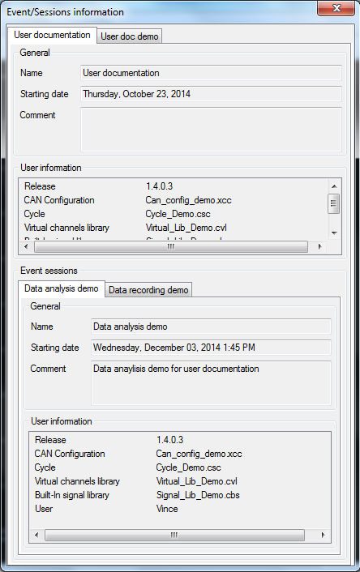
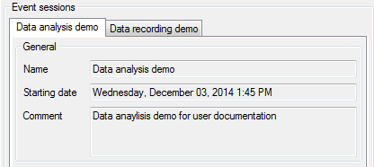
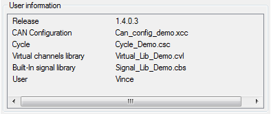

When data are displayed into the data viewer it is possible to see their record event and record session information. Click the ‘Show event/session information’ button  of the tool bar to get the information window.
of the tool bar to get the information window.

Event and session information cannot be changed from this window. They are only displayed for information purpose.
Information window contains only a multi-tab panel.
Each tab of the panel corresponds to one the record event of a data file of the current data set.

The ‘General’ section of the panel shows general information about the recording event.

The ‘User information’ section shows all user information attached to the record event.

Section ‘Record sessions’ shows details of each record session being part of the current data set.

Each record session has its own tab in the ‘Event session’ section multi-tab panel.

As per record event, ‘General’ section of a record session tab shows general information about the record session.

The ‘User information’ section shows all user information attached to the record session.

Created with the Personal Edition of HelpNDoc: Free CHM Help documentation generator